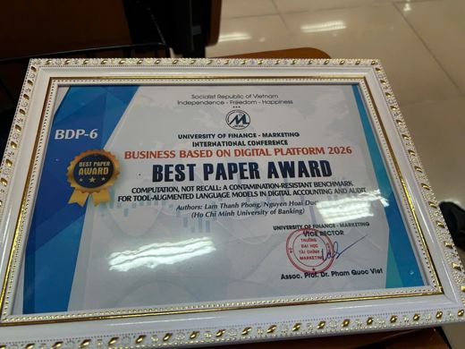
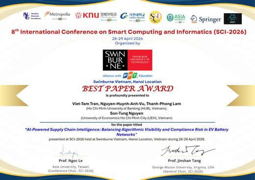
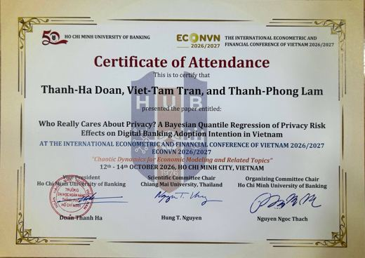
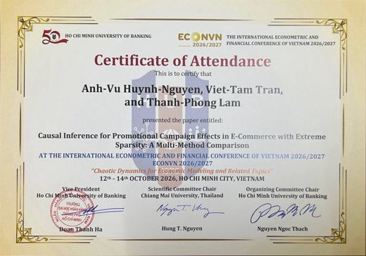
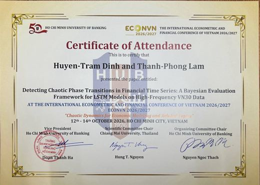
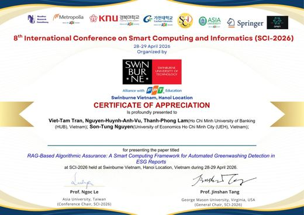
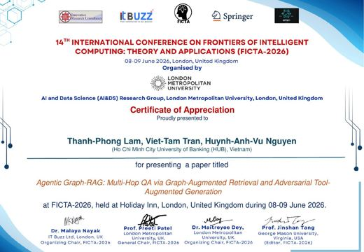

Awards and conference certificates.

Best Paper Award
"Computation, Not Recall: A Contamination-Resistant Benchmark for Tool-Augmented Language Models in Digital Accounting and Audit"
Business Based on Digital Platform International Conference 2026 (BDP-6), University of Finance - Marketing
Authors: Thanh-Phong Lam, Hoai-Duc Nguyen.

Best Paper Award
"AI-Powered Supply Chain Intelligence: Balancing Algorithmic Visibility and Compliance Risk in EV Battery Networks"
8th International Conference on Smart Computing and Informatics (SCI-2026), Swinburne Vietnam, Hanoi, 28-29 April 2026
Authors: Viet-Tam Tran, Anh-Vu Huynh-Nguyen, Thanh-Phong Lam, Son-Tung Nguyen.

Best Paper Award, Second Place
"Who Really Cares About Privacy? A Bayesian Quantile Regression of Privacy Risk Effects on Digital Banking Adoption Intention in Vietnam"
ECONVN 2026/2027, Ho Chi Minh City, 12-14 October 2026
Authors: Thanh-Ha Doan, Viet-Tam Tran, Thanh-Phong Lam.

"Causal Inference for Promotional Campaign Effects in E-Commerce with Extreme Sparsity: A Multi-Method Comparison"
ECONVN 2026/2027, Ho Chi Minh City, 12-14 October 2026
Authors: Anh-Vu Huynh-Nguyen, Viet-Tam Tran, Thanh-Phong Lam.

"Detecting Chaotic Phase Transitions in Financial Time Series: A Bayesian Evaluation Framework for LSTM Models on High-Frequency VN30 Data"
ECONVN 2026/2027, Ho Chi Minh City, 12-14 October 2026
Authors: Huyen-Tram Dinh, Thanh-Phong Lam.
"AI-Powered Supply Chain Intelligence: Balancing Algorithmic Visibility and Compliance Risk in EV Battery Networks"
SCI-2026, Swinburne Vietnam, Hanoi, 28-29 April 2026
Authors: Viet-Tam Tran, Anh-Vu Huynh-Nguyen, Thanh-Phong Lam, Son-Tung Nguyen.

"RAG-Based Algorithmic Assurance: A Smart Computing Framework for Automated Greenwashing Detection in ESG Reports"
SCI-2026, Swinburne Vietnam, Hanoi, 28-29 April 2026
Authors: Viet-Tam Tran, Anh-Vu Huynh-Nguyen, Thanh-Phong Lam, Son-Tung Nguyen.

"Agentic Graph-RAG: Multi-Hop QA via Graph-Augmented Retrieval and Adversarial Tool-Augmented Generation"
14th International Conference on Frontiers of Intelligent Computing: Theory and Applications (FICTA-2026), London, 8-9 June 2026
Authors: Thanh-Phong Lam, Viet-Tam Tran, Huynh-Anh-Vu Nguyen.